Actual Motor Vehicle Insurance Portfolio Dataset Report
Author: Sunnyboy Ngobeni
First published: Wed, 21-Oct-2026; Last updated: Thu, 29-Oct-2026
This project analyses a non-life motor insurance dataset with 105,555 observations and 30 variables, and follows a structured end-to-end workflow comprising data wrangling, feature engineering & data splitting, variable selection, model building, and model Testing/evaluation to estimate the car insurance premiums using the claim frequency and severity approach.
Project Summary
Introduction
Insurance companies often rely on data-driven approaches to derive valuable insights that drive informed decision-making, and to estimate premiums, taking into account factors such as demographic info (e.g age, gender, occupation, etc), policy-related info (e.g insurance duration, premium amounts, type of cover/policy, etc), risk-related info (e.g vehicle value, power, mileage, etc), and previous claim history, amongst others where applicable/necessary/possible.
Objectives
The goals of this project is:
to use information such as demographic, policy, risk, and claims history to build and evaluate a GLM to predict car insurance premiums.
to compare the model results to a mean baseline model.
Methods
For the purpose of the premium calculations, a Log-normal GLM is fitted to estimate severity model, and a negative binomial for frequency.
One row-per-policy-per-year framework is used when modelling claim frequency so that the portfolio is priced at policy-level. For the severity model, the insurance portfolio is modeled at claims-level where multiple rows are allowed per policy claim per year.
Feature selection is done using filter methods (based on statistical properties like correlation, zero-variance, etc.) to determine the best-performing combination of variables.
The severity model is evaluated using RMSE (and MAE) compared against the baseline model, gini index and lorenz curve are also used for further evaluation.
Results
The chosen GLM performed better than the mean baseline.
Data Wrangling & Splitting
The “Actual Motor Vehicle Insurance Portfolio Dataset” is accessible at Mendeley Data through this link https://doi.org/10.17632/5cxyb5fp4f.2, (Lledo and Pavia July 30, 2024).
Data Overview
This sample dataset was created from a Spanish insurance company specialising in non-life insurance and covers a period of three completed years (November 2015–December 2018) , and has 105,555 rows (53,502 unique policyholder) and 30 variables. Each row represents an insurance policy that is automatically renewed annually until either the policyholder decides to cancel it or the insurance company terminates it due to non-payment, futhermore each row represents a distinct insurance contract or policy, with varying maturity dates hence a policyholder can have multiple rows (policies) in the dataset.
The dataset comprises date-related info like date of birth of the insured, and policy start and renewal dates which can be used for policy management and risk assessment. It also includes economic variables like premiums and claim costs, and risk-related variables, such as vehicle size, power, and weight.
Variables like Premiums, and claim costs exclude taxes.
Some variables, such as the number and cost of claims, are presented in an aggregated form for all types of claims. This aggregation hides some relevant information, and separating the claims by type would add much value. A subset with detailed information on the nature of each claim, along with a more specific breakdown of the amount for each claim is provided.
Features and summary statistics
Uses skimr package, (Waring et al. 2026).
| skim_variable | n_missing | complete_rate | min.val | median.val | mean.val | p95.val | p99.val | max.val | st.dev | skewness | distribution |
|---|---|---|---|---|---|---|---|---|---|---|---|
| id | 0 | 1.0000 | 1.000 | 26103.000 | 26286.7597 | 50521.25 | 52880.0000 | 53502.000 | 15388.0505 | 0.0335 | ▇▇▇▇▇▇▇▇ |
| distribution_channel | 0 | 1.0000 | 0.000 | 0.000 | 0.4517 | 1.00 | 1.0000 | 1.000 | 0.4977 | 0.1940 | ▇▁▁▁▁▁▁▆ |
| seniority | 0 | 1.0000 | 1.000 | 4.000 | 6.6792 | 20.00 | 30.0000 | 40.000 | 6.2555 | 1.9436 | ▇▃▁▁▁▁▁▁ |
| policies_in_force | 0 | 1.0000 | 1.000 | 1.000 | 1.4546 | 3.00 | 5.0000 | 17.000 | 0.9265 | 3.6509 | ▇▁▁▁▁▁▁▁ |
| max_policies | 0 | 1.0000 | 1.000 | 2.000 | 1.8355 | 4.00 | 6.0000 | 17.000 | 1.1539 | 2.6024 | ▇▁▁▁▁▁▁▁ |
| max_products | 0 | 1.0000 | 1.000 | 1.000 | 1.0657 | 2.00 | 2.0000 | 4.000 | 0.2677 | 4.3943 | ▇▁▁▁▁▁▁▁ |
| lapse | 0 | 1.0000 | 0.000 | 0.000 | 0.2207 | 1.00 | 2.0000 | 7.000 | 0.4639 | 2.2904 | ▇▂▁▁▁▁▁▁ |
| payment | 0 | 1.0000 | 0.000 | 0.000 | 0.3203 | 1.00 | 1.0000 | 1.000 | 0.4666 | 0.7702 | ▇▁▁▁▁▁▁▃ |
| premium | 0 | 1.0000 | 40.140 | 292.535 | 316.3026 | 570.63 | 822.8735 | 2993.340 | 141.2224 | 2.2131 | ▇▂▁▁▁▁▁▁ |
| cost_claims_year | 0 | 1.0000 | 0.000 | 0.000 | 176.2989 | 882.00 | 3137.6370 | 260853.240 | 1780.0327 | 88.1101 | ▇▁▁▁▁▁▁▁ |
| n_claims_year | 0 | 1.0000 | 0.000 | 0.000 | 0.4150 | 3.00 | 5.0000 | 25.000 | 1.1232 | 4.4880 | ▇▁▁▁▁▁▁▁ |
| n_claims_history | 0 | 1.0000 | 0.000 | 1.000 | 2.7703 | 10.00 | 17.0000 | 52.000 | 3.8859 | 2.9052 | ▇▁▁▁▁▁▁▁ |
| r_claims_history | 0 | 1.0000 | 0.000 | 0.090 | 0.4392 | 2.00 | 3.3600 | 26.070 | 0.7339 | 4.0312 | ▇▁▁▁▁▁▁▁ |
| type_risk | 0 | 1.0000 | 1.000 | 3.000 | 2.7229 | 3.00 | 3.0000 | 4.000 | 0.6134 | -1.8329 | ▁▁▁▁▁▇▁▁ |
| area | 0 | 1.0000 | 0.000 | 0.000 | 0.2744 | 1.00 | 1.0000 | 1.000 | 0.4462 | 1.0111 | ▇▁▁▁▁▁▁▃ |
| second_driver | 0 | 1.0000 | 0.000 | 0.000 | 0.1240 | 1.00 | 1.0000 | 1.000 | 0.3296 | 2.2815 | ▇▁▁▁▁▁▁▁ |
| year_matriculation | 0 | 1.0000 | 1950.000 | 2005.000 | 2004.7360 | 2015.00 | 2017.0000 | 2018.000 | 6.7553 | -1.4089 | ▁▁▁▁▁▃▇▃ |
| power | 0 | 1.0000 | 0.000 | 90.000 | 92.7567 | 150.00 | 193.0000 | 580.000 | 36.9803 | 0.4562 | ▃▇▁▁▁▁▁▁ |
| cylinder_capacity | 0 | 1.0000 | 49.000 | 1598.000 | 1618.6881 | 2476.00 | 2997.6500 | 7480.000 | 603.3547 | 0.2672 | ▁▇▃▁▁▁▁▁ |
| value_vehicle | 0 | 1.0000 | 270.460 | 17630.000 | 18429.4907 | 32800.00 | 46932.3075 | 220675.800 | 9132.1628 | 2.1662 | ▇▁▁▁▁▁▁▁ |
| n_doors | 0 | 1.0000 | 0.000 | 5.000 | 4.0705 | 5.00 | 5.0000 | 6.000 | 1.5087 | -1.6871 | ▁▁▁▂▁▂▇▁ |
| length | 10359 | 0.9028 | 1.978 | 4.230 | 4.2522 | 4.83 | 5.6380 | 8.218 | 0.3929 | 1.2230 | ▁▁▇▅▁▁▁▁ |
| weight | 0 | 1.0000 | 43.000 | 1205.000 | 1191.8601 | 1790.00 | 2110.0000 | 7300.000 | 456.8378 | 1.2377 | ▂▇▁▁▁▁▁▁ |
| claim_type_count | 0 | 1.0000 | 0.000 | 0.000 | 0.0692 | 1.00 | 1.0000 | 9.000 | 0.3035 | 5.8340 | ▇▁▁▁▁▁▁▁ |
| amount | 0 | 1.0000 | 0.000 | 0.000 | 40.3880 | 58.67 | 865.1285 | 236178.720 | 932.1855 | 174.4667 | ▇▁▁▁▁▁▁▁ |
Data Cleaning & Pre-Processing
The data has already been cleaned to address missing values (though some NAs still exist), duplicated rows, errors, etc.
The existing NAs will be imputed either by the mode - for categorical variables, or median value - for numeric variables.
The claims table is restructured so that each claim type only occurs once per policy per year and is then joined to the policy data table based on policy id and cost_claims_year column. An additional column is created during the restructuring of the claims table, the column claims_type_count counts the number of times a certain type of claim occurs for each claim type grouping. This solidifies the one row per claim type per year approach without losing valuable information.
The claims table only contains a portion (around 15% ) of the overall claims information thus the columns where claims were recorded but the claims-related info was not provided will have to be treated as anonimyzed.
As part of the pre-processing process, we’ll adjust date variables from character to date formats (YYYY/MM/DD) ,and qualitative/character variables to factors, to allow easier analysis.
Feature Engineering
The following new variables will be created from the existing variables:
Feature:
driver_age(Continuous Numeric)- Definition: Calculated as
{last renewal year} - {date of birth}. It represents the chronological age of the policyholder at the time of their most recent contract renewal.
Rationale: Age is a foundational risk factor in motor and personal lines insurance. Statistically, risk follows a U-shaped curve where younger drivers (lack of experience) and elderly drivers (declining cognitive/physical response times) exhibit higher claim frequencies.
ML Impact: Provides a strong linear or non-linear signal to easily segment risk tiers by creating splits at critical age thresholds (e.g., age 25 or 75).
- Definition: Calculated as
Feature:
licence_duration(Discrete Numeric)- Definition: Calculated as
{last renewal year} - {date licence obtained}. It measures the total number of years the policyholder has held a valid driving licence.
Rationale: This isolates driving experience from biological age. It allows the model to differentiate between a 40-year-old who has been driving for 20 years and a 40-year-old who just obtained their licence last month.
ML Impact: Reduces confounding errors in the model. By combining this with
driver_age, the model can better capture interaction effects related to maturity versus actual time on the road.
- Definition: Calculated as
Feature:
policy_exposure(Continuous Numeric)- Definition: Calculated as
min{lapse date, next renewal date, end of investigation year} - max{contract start date, last renewal date, start of investigation year}, normalized by dividing by 365.25 to convert the days into a fraction of a year.
Rationale: Policyholders are only at risk of making a claim while their policy is actively in force during the observation window. A policy active for 3 months (0.25 exposure) cannot be treated the same as one active for a full year (1.0 exposure).
ML Impact: Essential as an offset variable in Generalized Linear Models (GLMs). It ensures the model predicts claim rates per unit of time rather than absolute counts.
- Definition: Calculated as
Feature:
policy_tenure(Discrete Numeric)- Definition: Calculated as
{last renewal year} - {contract start year}. It measures the total duration (in years) that the customer has maintained an active relationship with the insurance company.
Rationale: Measures customer loyalty and historical behavior. Long-term clients usually demonstrate lower risk profiles, better care of insured assets, and higher retention (lower churn) rates.
ML Impact: Serves as a strong indicator for customer lifetime value and churn classification models, helping the algorithm separate volatile new business from stable, seasoned books of business.
Addition justification: This will replace the
seniorityvariable which is at 2018, i.e for a policy which was started in 2016, renewed in 2017 and 2018 the seniority in all those years is 3. Thispolicy_tenurevariable will have 1 for 2016, 2 for 2017 and 3 for 2018, provided the policy was active for full years.
- Definition: Calculated as
Feature:
policy_month(Categorical 1 to 12)- Definition: Extracted as the
{month of last renewal}from the full contract renewal date.
Rationale: Captures monthly variations in purchasing behavior and operational cycles, such as high renewal volumes during peak car-buying months or fiscal year-ends.
ML Impact: Allows the model to identify specific calendar month anomalies or marketing campaign impacts without requiring the model to process a complex daily timeline.
- Definition: Extracted as the
Feature:
policy_year(Discrete Numeric)- Definition: Extracted as the
{year of last renewal}from the full contract renewal date.
Rationale: Controls for macro-economic shifts, annual inflation, changes in company underwriting guidelines, or structural shifts in premium pricing over time.
ML Impact: Helps the model adjust for baseline drift across different cohorts, ensuring that historical data from older years doesn’t skew predictions for upcoming periods.
- Definition: Extracted as the
Feature:
policy_season(Categorical e.g Summer, Autumn, Winter, Spring)- Definition: Derived by mapping the
{season of last renewal}to its respective weather season based on the month of renewal.
Rationale: Weather conditions drastically impact road safety and claim frequencies (e.g., ice/snow in winter or heavy rain in monsoon seasons cause spike in accidents).
ML Impact: Reduces the 12 levels of
policy_monthinto a more concise, higher-level feature, preventing overfitting while explicitly highlighting environmental risk factors to the algorithm.
- Definition: Derived by mapping the
Feature:
policy_quarter(Categorical e.g Q1, Q2, Q3, Q4)- Definition: Derived by grouping the
{quarter of last renewal}into three-month financial bins based on the renewal month.
Rationale: Aligns the data with corporate financial reporting cycles, macro underwriting strategy adjustments, and quarterly economic changes.
ML Impact: Provides a mid-level temporal granularity that balances the hyper-specificity of
policy_monthwith the broad view ofpolicy_year.
- Definition: Derived by grouping the
Feature:
is_new_client(Binary e.g 0/1)- Definition: A flag where
1indicates a brand-new policyholder (policy_tenure == 0) and0indicates a returning or existing client.
Rationale: New clients lack internal historical data, making them statistically more volatile and uncertain risks compared to clients whose claim behaviors are already known to the company.
ML Impact: Acts as an explicit switch or routing signal for the model, allowing it to treat seasoned data profiles differently from profiles with missing historical context.
- Definition: A flag where
Feature:
past_claim_count(Discrete Numeric)- Definition: A cumulative count of all valid insurance claims filed by the policyholder prior to the current renewal period.
Rationale: The best predictor of future behavior is past behavior. In insurance, a driver with multiple historical claims is statistically highly likely to claim again.
ML Impact: Typically functions as one of the highest-importance features in risk and severity models, giving algorithms a direct, heavily-weighted baseline to scale up risk premium calculations.
Addition justification: This will replace the
n_claims_historycolumn.
Since policy_month, policy_quarter, and
policy_season are derived from the exact same piece of data
(month of last renewal), there is a possibility that some
are redundant. Nonetheless, they are included for testing to see which
granularity (monthly variations, quarterly trends, or seasonal weather
impacts) has the highest predictive power for claims.
14,836 observations with a zero exposure will be removed.
Data splitting
The data will be split into train and test set before any further analysis can be done, to avoid data-leakage. Splitting will not be done at random, instead it’ll be done chronologically following the rolling window validation approach.
Hence the training data will comprise of policies from 2015 to 2017 and the test data will be the 2018 policies. The train data will be used as an analysis and assessment data first for model selection, thereafter it will be used as a whole for model training and evaluated using the test set.
This time-based splitting approach prevents the possibility of having future data spilling into the training set, and solidifies the approach of using historical info to predict the future.
The metric used will be policy years, hence policies renewed/initiated in, say 2018 regardless of the month of renewal/initiation will fall under the policy year 2018, since the renewal/effective date is 2018, etc.
The train/test split looks like these:
## # Sliding period resampling
## # A tibble: 1 × 2
## splits id
## <list> <chr>
## 1 <split [16652/3368]> Slice1The time series resampling looks like this:
## # Sliding period resampling
## # A tibble: 2 × 2
## splits id
## <list> <chr>
## 1 <split [1410/9183]> Slice1
## 2 <split [10593/6059]> Slice2The following variables in the data are believed to cause data
leakage for the modelling and will be removed
(seniority)
From here on up until model building, the dataset of interest will be the training set.
EDA & Feature Selection
Exploratory Data Analysis (EDA)
Target variables
The target variables are claims count and (average) claim cost.
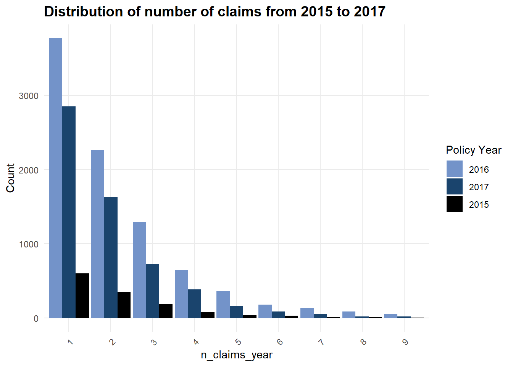
## `geom_smooth()` using method = 'loess' and formula = 'y ~ x'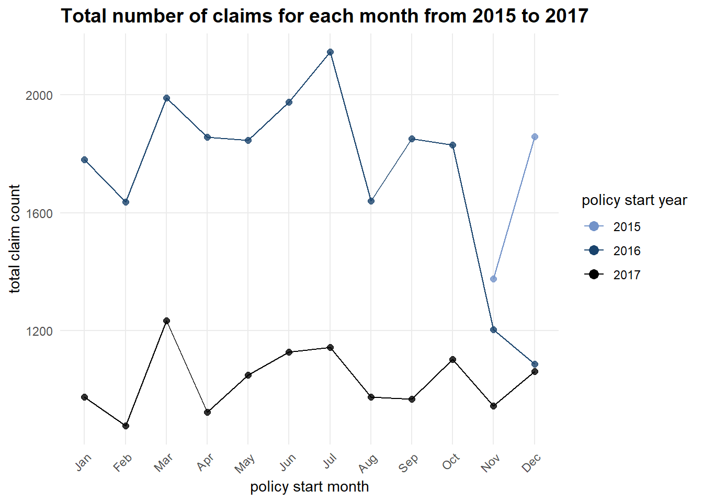
Left: There were more claims in 2016 than 2017, and in both years the modal claim is 1. The number of policyholders decreases as the claim count increases.
Right: There was a significant decline in total claims in 2016 from October to November. There was a sharp increase in claims from November to December in 2015. The number of claims in 2017 remained more or less stable, with no sudden large changes (except feb to march and march to april).
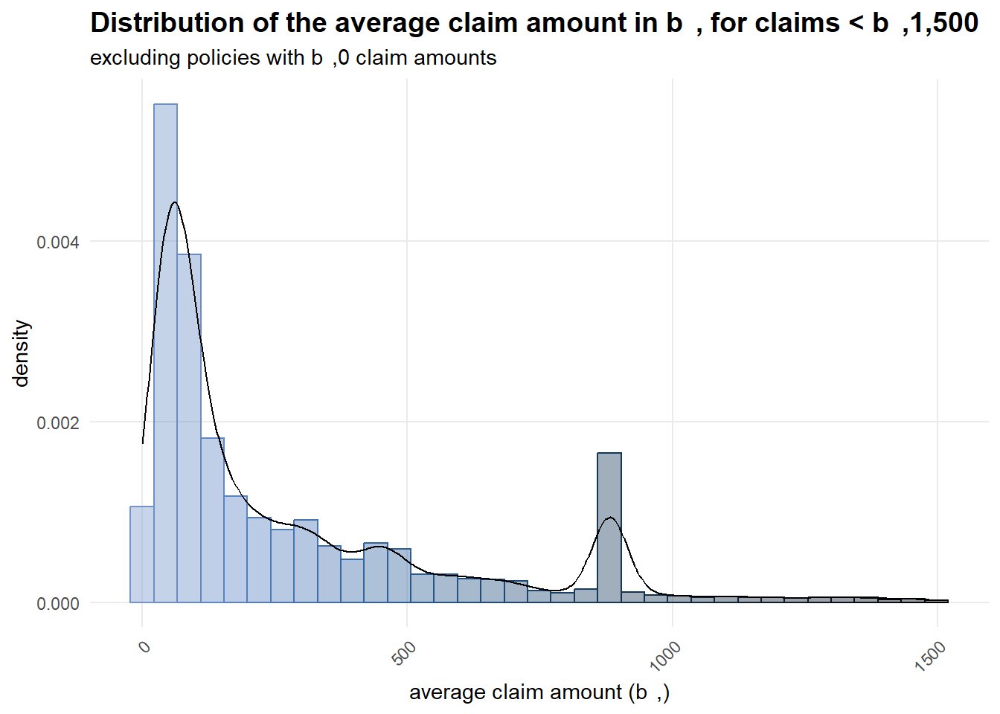
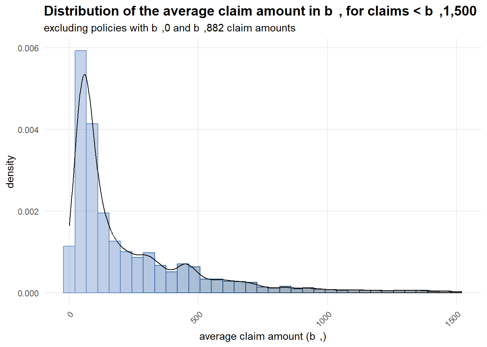
Left: (Average) claim amounts are skewed to the right & bi-modal, with many policyholders having claims costs of less than €500. There are few significantly large values (outliers) which is why the density curves flattens out as it goes towards ∞ and why the histogram was capped at €1,500.
Adjusting for the €882 spike (by removing it), we get a uni-modal right skewed distribution as seen on the right.
Other variables
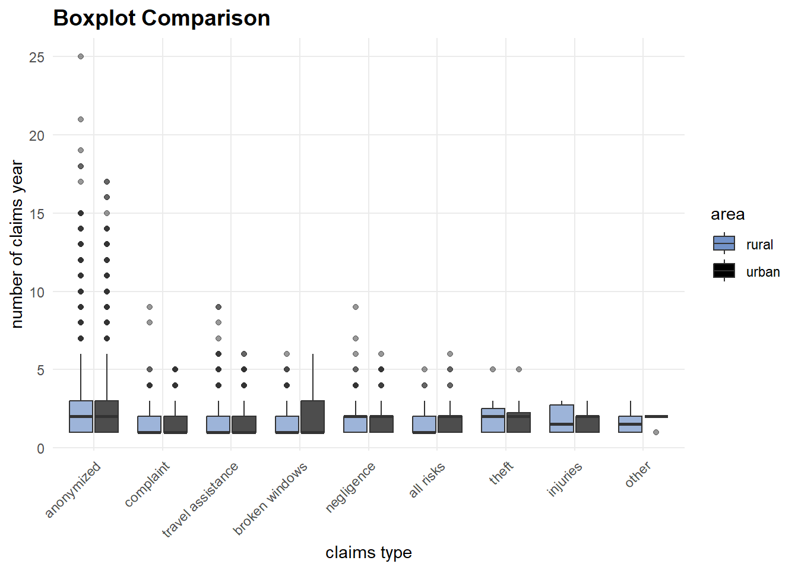
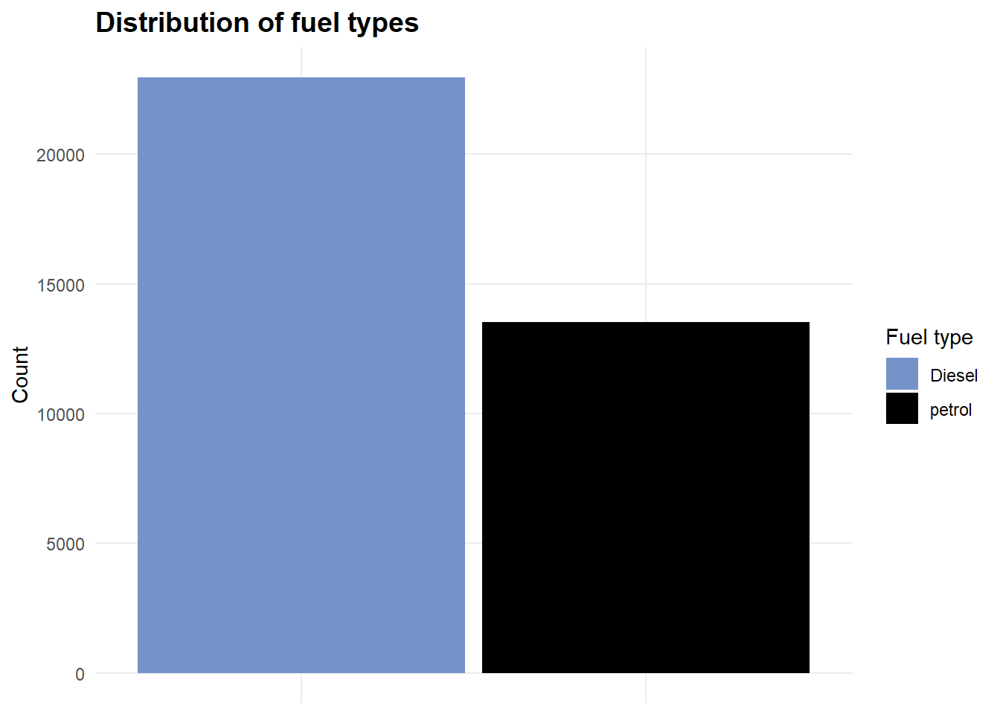
Left: The boxplots for anonymized, complaint, travel assistance, and negligence are identical for both the rural and urban areas, the only difference is the outliers with rural areas having larger and many outliers. For broken windows and theft, the median for both rural and urban areas is the same.
Right: Out of the ~ 37K unique policyholders in the training set, more than 20K uses diesel for their vehicles and the rest uses petrol.
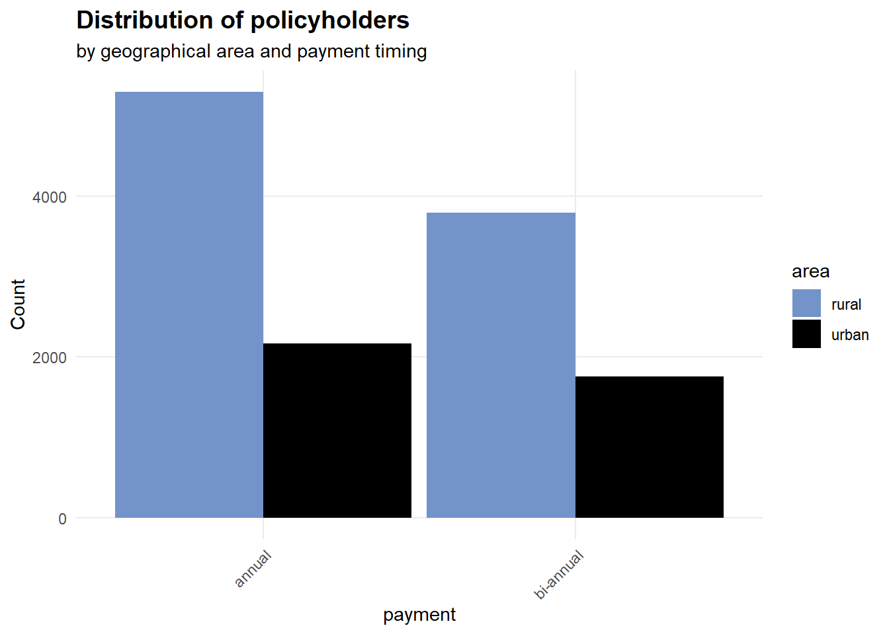
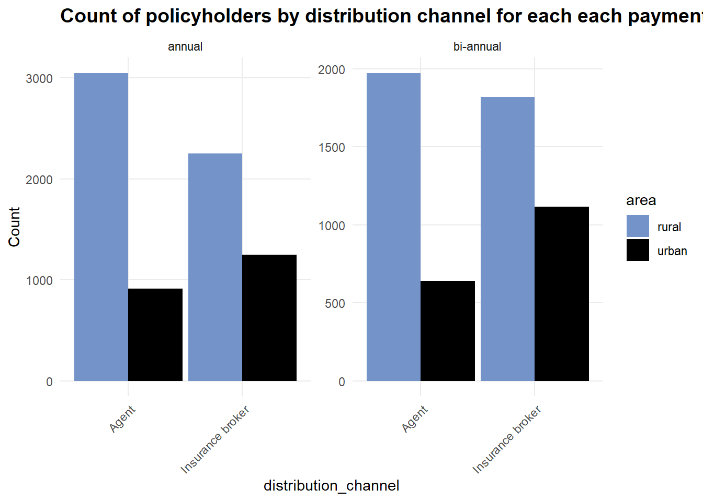
Left: On average, there are more policyholders from rural areas than those of urban areas. In any given area, most people from prefer making annual payments over bi-annual payments.
Right:
Majority of policyholders in rural areas got the insurance policy through an agent, and those in urban areas got it through an insurance broker.
Of the people in rural areas who make annual payments, there is a big gap between those who got their cover from an agent and those who used a broker, the same observation can be made for people from urban areas who make bi-annual payments.
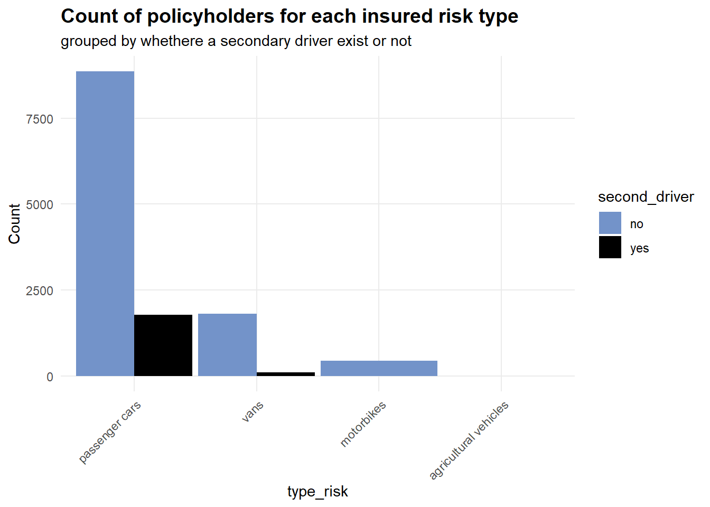
Passenger cars and vans have registered secondary drivers, while motorbikes and agricultural vehicles do not. There are more policies with passenger cars, followed by vans, then motorbikes.
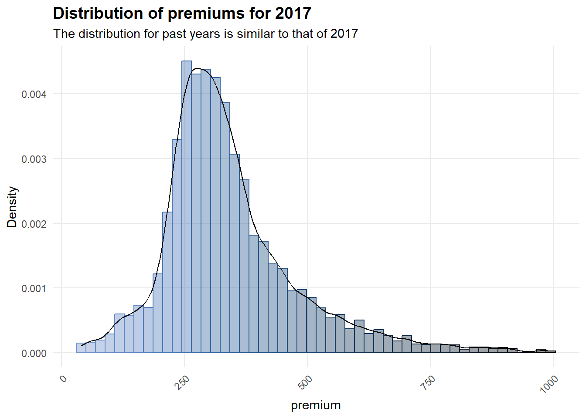
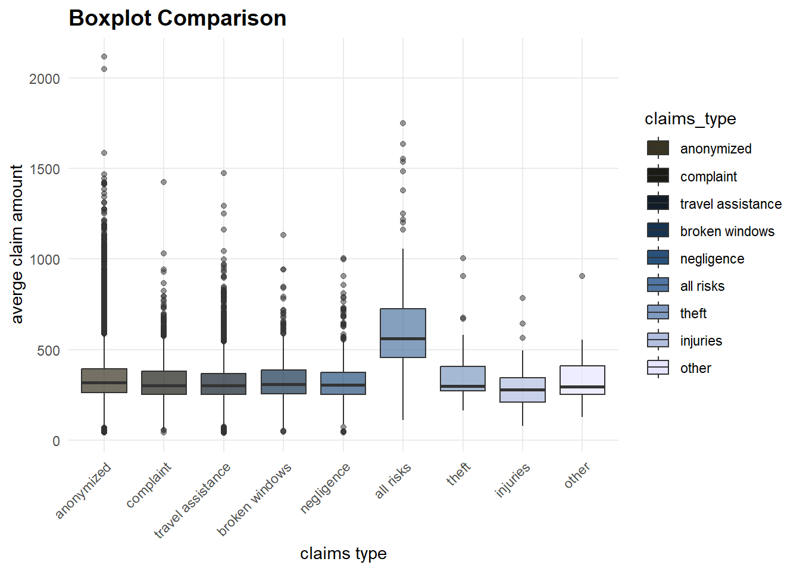
The distribution of premiums is approximately normal (or slightly skewed to the right), and most policyholders pay less than 500, this is consistent with the (avergae) claim cost which is mostly less than 500.
## `geom_smooth()` using method = 'gam' and formula = 'y ~ s(x, bs = "cs")'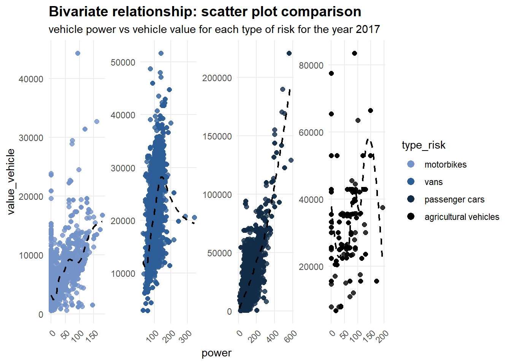
- The relationship between vehicle value and power is not linear, and seems to change depending on the type of risk.
Feature Selection
The formulas for frequency and severity models before feature selection are as follows:
- Frequency:
## n_claims_year ~ type_risk + driver_age + power + length + n_doors +
## policies_in_force + area + distribution_channel + policy_season +
## policy_month + policy_tenure + policy_year + policy_quarter +
## past_claims + offset(log_exposure)
## <environment: 0x000001c453c534a8>- severity:
## [1] "claim_type_count , cylinder_capacity , type_fuel , driver_age , area , premium , power , n_doors , length , past_claims , claims_type"We do feature selection using a statistical approach:
- We filter the variables based on statistical properties. We do this by removing highly correlated variables, variables that are sparse and unbalanced, as well as zero-variance variables where necessary. We’ll use a threshold of .7 for GLM’s since they are highly sensitive to multicollinearity.
Modelling
For severity modelling, The portfolios has operational thresholds or flat-rate caps where average claim amounts of 882 occur more than 1,200 times causing the second spike in the density distribution.
Instead of forcing one model to do everything, the prediction problem is split into two distinct tasks:
Stage 1 (Classification): Train a Logistic Regression model to predict the probability that a claim will be exactly 882 based on the features.
Stage 2 (Severity Regression): Filter the dataset to include only rows where avg_amount ≠ 882. Train a standard severity regression model on this continuous subset using the chosen features on a Log-normal regression model.
How to make predictions: To predict the expected claim amount for a new observation, combine the outputs of both stages:
\[ \hat{Y} = P( Y=882 | X) * 882 + [(1-P(Y=882|X)]*E[Y|Y\neq882,X] \]
Cross-Validation Evaluation
The cross-validation of the training set uses a sliding period split where 2015-2016 are used for analyses and 2017 is used for assessment. The data is split is <[1410/9183]> for slice1 and <split [10593/6059]> for slice2.
The sample sizes are small and may not be enough to adequately estimate the model co-efficients considering that the data has many variables(columns).
Frequency Model
Severity Model
Probability model
This predict the probability that a claim will be exactly 882 based on the predictive features.
The summary of the GLM is given below. Based on the p-value, most predictors aren’t significant (at a 5% level), including the intercept.
| term | estimate | std.error | statistic | p.value |
|---|---|---|---|---|
| (Intercept) | -2.46604 | 1.64595 | -1.49825 | 0.134 |
| claim_type_count | -2.54466 | 0.36482 | -6.97518 | <0.001 |
| cylinder_capacity | 0.00083 | 0.00046 | 1.81023 | 0.070 |
| type_fuelD | -0.08681 | 0.30246 | -0.28700 | 0.774 |
| driver_age | 0.00334 | 0.00997 | 0.33532 | 0.737 |
| area1 | -0.12395 | 0.26212 | -0.47288 | 0.636 |
| premium | -0.00074 | 0.00092 | -0.80287 | 0.422 |
| power | -0.00285 | 0.00546 | -0.52213 | 0.602 |
| n_doors | 0.18801 | 0.13721 | 1.37020 | 0.171 |
| length | 0.51616 | 0.38388 | 1.34458 | 0.179 |
| past_claims | -0.33726 | 0.26051 | -1.29463 | 0.195 |
| claims_typecomplaint | -19.49140 | 1800.12463 | -0.01083 | 0.991 |
| claims_typetravel assistance | -19.22913 | 997.42493 | -0.01928 | 0.985 |
| claims_typebroken windows | -19.55179 | 2207.96976 | -0.00886 | 0.993 |
| claims_typenegligence | 1.38290 | 0.41146 | 3.36096 | <0.001 |
| claims_typeall risks | -19.07107 | 3005.90622 | -0.00634 | 0.995 |
| claims_typetheft | -18.84740 | 8562.88758 | -0.00220 | 0.998 |
| claims_typeinjuries | -19.47841 | 17730.36991 | -0.00110 | >0.999 |
| claims_typeother | -18.82471 | 12522.41037 | -0.00150 | 0.999 |
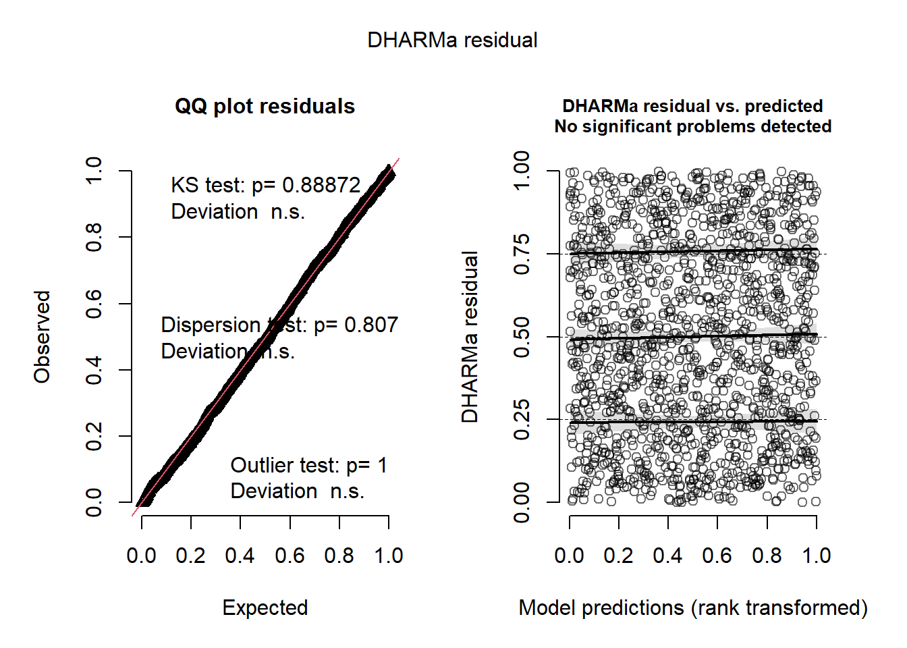
For the QQ-plot:
the points sits cleanly on the 45-degree line,
hence the overall distribution aligns with the expected uniform distribution.
For the residual vs predicted plot:
- the dashed black lines are mostly flat and centered around 0.25, 0.5 & 0.75 (no heavy curves, severe narrowing or widening).

There is no sign of homogeneity in the claims type variable. (need to rename the plot, x-axis)
Severity model:
This part trains a severity model for the dataset that include only rows where avg_amount != 882.
As can be seen in the table below, most of the predictors are significant (at a 5% level of significance) since they have a p-value or 0.05 or less. The intercept is significant in this model.
| term | estimate | std.error | statistic | p.value |
|---|---|---|---|---|
| (Intercept) | 4.48507 | 0.37036 | 12.11004 | <0.05 |
| claim_type_count | -0.16103 | 0.01526 | -10.55216 | <0.05 |
| cylinder_capacity | -0.00013 | 0.00010 | -1.31118 | 0.20 |
| type_fuelD | 0.08372 | 0.07092 | 1.18059 | 0.25 |
| driver_age | -0.00651 | 0.00244 | -2.66328 | <0.05 |
| area1 | -0.07388 | 0.06139 | -1.20338 | 0.25 |
| premium | 0.00068 | 0.00020 | 3.33342 | <0.05 |
| power | 0.00094 | 0.00126 | 0.74910 | 0.45 |
| n_doors | -0.00814 | 0.02768 | -0.29403 | 0.75 |
| length | 0.24802 | 0.08970 | 2.76487 | <0.05 |
| past_claims | -0.03841 | 0.03586 | -1.07116 | 0.30 |
| claims_typecomplaint | 0.53499 | 0.11848 | 4.51543 | <0.05 |
| claims_typetravel assistance | -0.64454 | 0.08106 | -7.95092 | <0.05 |
| claims_typebroken windows | 0.29556 | 0.14140 | 2.09029 | <0.05 |
| claims_typenegligence | 1.56661 | 0.24322 | 6.44124 | <0.05 |
| claims_typeall risks | 1.49588 | 0.19441 | 7.69433 | <0.05 |
| claims_typetheft | 0.08680 | 0.53280 | 0.16292 | 0.85 |
| claims_typeinjuries | 1.81812 | 1.04298 | 1.74321 | 0.10 |
| claims_typeother | 1.80487 | 0.73910 | 2.44198 | <0.05 |
The DHARMa package is used to perform model diagnostics below:
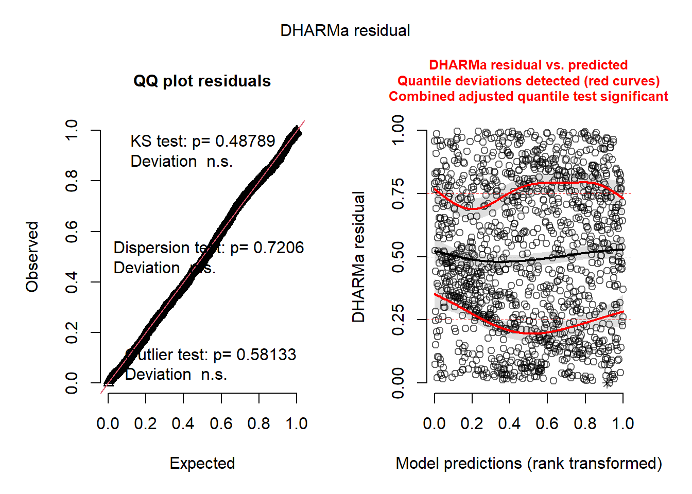
For the QQ-plot:
the points sits cleanly on the 45degree line,
hence the overall Log-normal distribution aligns with the expected uniform distribution.
For the residual vs predicted plot:
the dashed black lines are mostly flat and centered around 0.5. (no heavy curves, severe narrowing or widening),
for the 0.25 and 0.75 quantile areas, the lines are curved.
The confidence interval bands are a bit wide in for both the probability and the severity models, for all quantiles. This is likely due to a data size issue, the cross-validation data is small and the model doesn’t get enough data to estimate the coefficients properly.
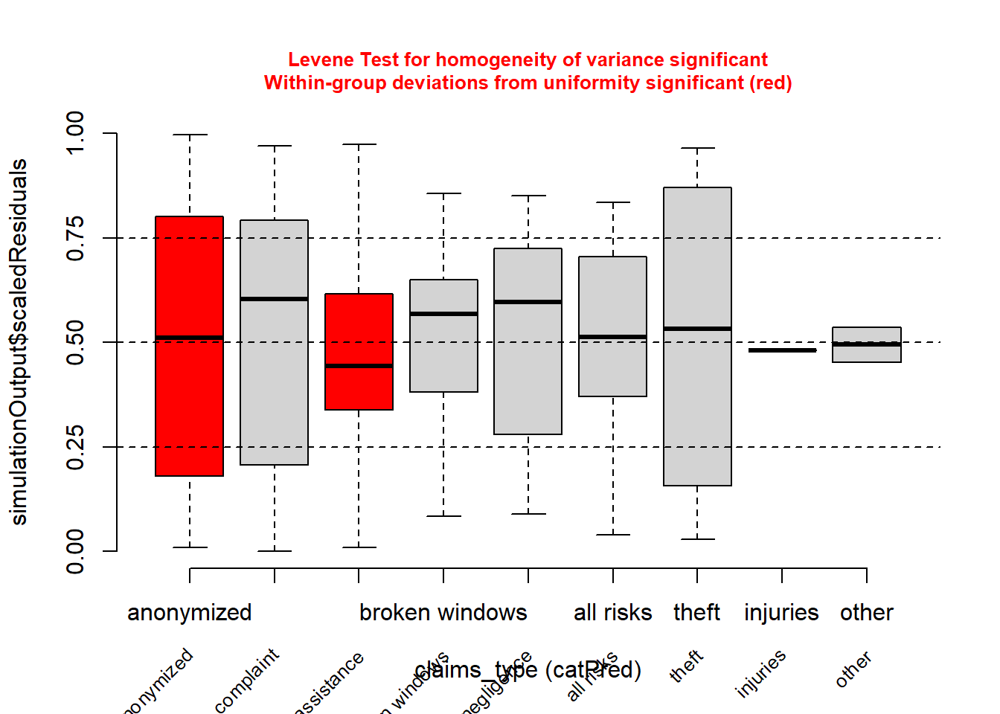
There is a sign of homogeneity in the claims type variable for annonymized and travel assistance.
The performance metrics for the (combined probability and severity) models is given below:
## # A tibble: 2 × 4
## .metric .estimator model.estimate baseline.estimate
## <chr> <chr> <dbl> <dbl>
## 1 mae standard 251. 307.
## 2 rmse standard 391. 426.The model performs better compared to a mean baseline in both the MAE and RMSE.
Final Model Training
Frequency Model
Severity Model
Probability model
This predict the probability that a claim will be exactly 882 based on the predictive features.
The summary of the GLM is given below.
| term | estimate | std.error | statistic | p.value |
|---|---|---|---|---|
| (Intercept) | 0.04403 | 0.47765 | 0.09217 | 0.95 |
| claim_type_count | -2.74867 | 0.13273 | -20.70874 | <0.05 |
| cylinder_capacity | 0.00007 | 0.00013 | 0.51019 | 0.60 |
| type_fuelD | -0.01488 | 0.08709 | -0.17088 | 0.85 |
| driver_age | 0.00476 | 0.00280 | 1.70283 | 0.10 |
| area1 | 0.09439 | 0.07795 | 1.21082 | 0.25 |
| premium | -0.00032 | 0.00028 | -1.15131 | 0.25 |
| power | -0.00472 | 0.00156 | -3.02005 | <0.05 |
| n_doors | -0.02687 | 0.04159 | -0.64610 | 0.50 |
| length | 0.43659 | 0.11873 | 3.67711 | <0.05 |
| past_claims | -0.19947 | 0.02854 | -6.98811 | <0.05 |
| claims_typecomplaint | -4.16451 | 0.50308 | -8.27803 | <0.05 |
| claims_typetravel assistance | -17.97676 | 203.71420 | -0.08825 | 0.95 |
| claims_typebroken windows | -18.25514 | 463.82756 | -0.03936 | >0.95 |
| claims_typenegligence | 1.20157 | 0.10497 | 11.44660 | <0.05 |
| claims_typeall risks | -4.02521 | 1.00585 | -4.00178 | <0.05 |
| claims_typetheft | -18.20146 | 1701.88752 | -0.01069 | >0.95 |
| claims_typeinjuries | -18.29797 | 2598.83297 | -0.00704 | >0.95 |
| claims_typeother | -18.23636 | 2061.23287 | -0.00885 | >0.95 |
Based on the p-value, claim_type_count, past_claims, vehicle power, length, and some claims types are significant (at a 5% level), the intercept is still not significant.
The DHARMa diagnostics are given below:
## plotResiduals() for datasets larger than 10,000 displays a spline instead of quantile regression lines for the sake of speed. To switch back to quantile regression lines, use the argument quantreg = T and have in mind that the function may take a while to compute and display the lines.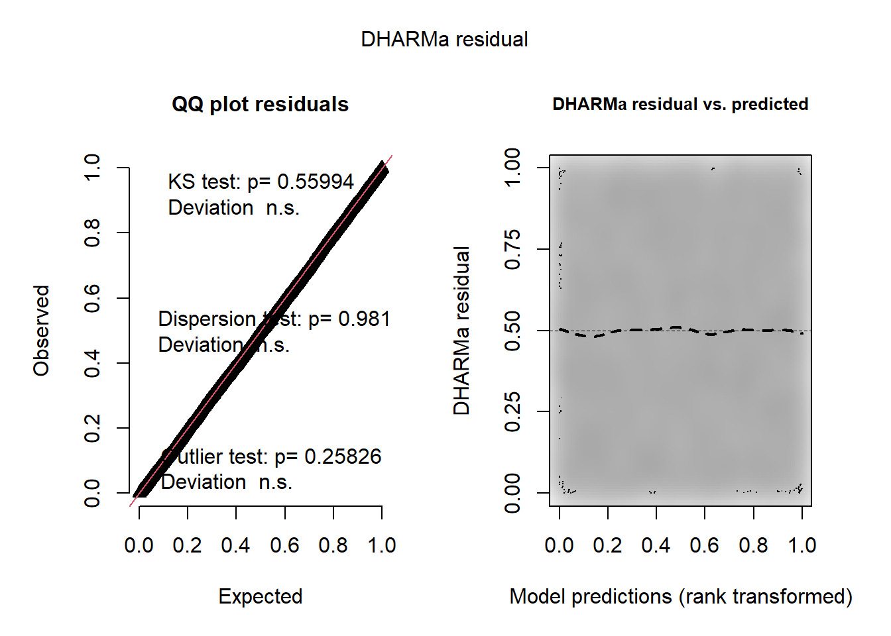
For the QQ-plot:
the points sits cleanly on the 45-degree line,
hence the overall distribution aligns with the expected uniform distribution.
For the residual vs predicted plot:
- the dashed black lines are mostly flat and centered around 0.25, 0.5 & 0.75 (no heavy curves, severe narrowing or widening).
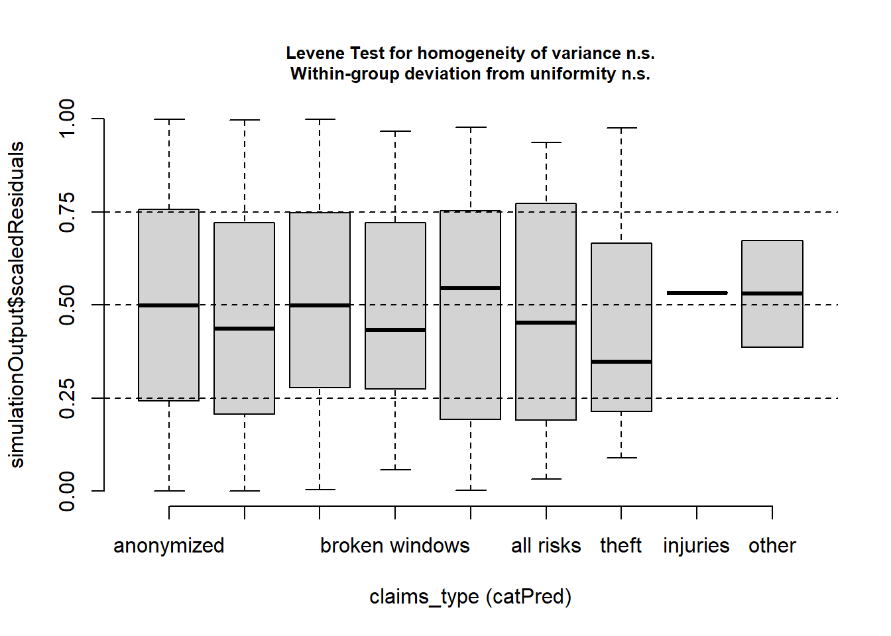
There is no sign of homogeneity in the claims type variable. (need to rename the plot, x-axis)
Severity model:
As can be seen in the table below, most of the predictors are significant (at a 5% level of significance) since they have a p-value or 0.05 or less. The intercept is significant in this model.
| term | estimate | std.error | statistic | p.value |
|---|---|---|---|---|
| (Intercept) | 4.44335 | 0.10976 | 40.48069 | <0.05 |
| claim_type_count | -0.15111 | 0.00523 | -28.87832 | <0.05 |
| cylinder_capacity | -0.00015 | 0.00003 | -4.75425 | <0.05 |
| type_fuelD | 0.01622 | 0.02107 | 0.76956 | 0.45 |
| driver_age | -0.00097 | 0.00070 | -1.38458 | 0.15 |
| area1 | -0.04778 | 0.01898 | -2.51810 | <0.05 |
| premium | 0.00103 | 0.00006 | 16.63137 | <0.05 |
| power | 0.00071 | 0.00036 | 1.96467 | <0.05 |
| n_doors | 0.00235 | 0.00998 | 0.23528 | 0.80 |
| length | 0.16941 | 0.02817 | 6.01341 | <0.05 |
| past_claims | -0.00533 | 0.00420 | -1.26939 | 0.20 |
| claims_typecomplaint | 0.69820 | 0.03767 | 18.53302 | <0.05 |
| claims_typetravel assistance | -0.62013 | 0.02439 | -25.42148 | <0.05 |
| claims_typebroken windows | 0.38286 | 0.04844 | 7.90364 | <0.05 |
| claims_typenegligence | 1.53502 | 0.06877 | 22.32257 | <0.05 |
| claims_typeall risks | 1.06737 | 0.07041 | 15.16036 | <0.05 |
| claims_typetheft | 0.65988 | 0.16961 | 3.89055 | <0.05 |
| claims_typeinjuries | 1.13813 | 0.25637 | 4.43946 | <0.05 |
| claims_typeother | 1.55789 | 0.20363 | 7.65053 | <0.05 |
Claim type count, cylinder capacity, area, premium, power,length, and levels of claim type are useful in predicting claim severity for the non 882 values.
The DHARMa package is used to perform model diagnostics below:
## plotResiduals() for datasets larger than 10,000 displays a spline instead of quantile regression lines for the sake of speed. To switch back to quantile regression lines, use the argument quantreg = T and have in mind that the function may take a while to compute and display the lines.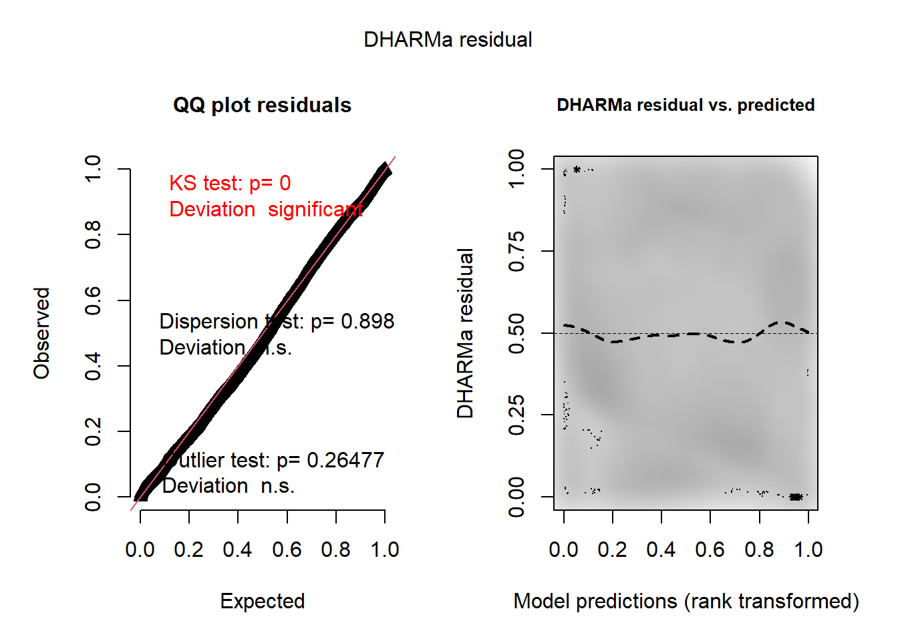
For the QQ-plot:
the points sits cleanly on the 45degree line,
hence the overall Log-normal distribution aligns with the expected uniform distribution. (the failed Kolmogorov-Sminorff test is probably due to a large sample size issue that the DHARMa package has)
For the residual vs predicted plot:
- the dashed black lines are mostly flat and centered around 0.5. (no heavy curves, severe narrowing or widening).

There is a sign of homogeneity in the claims type variable for annonymized and travel assistance.
Model Evaluation (Out-of-Sample)
The final performance metrics of the model using a hold-out test set is given below:
## # A tibble: 2 × 4
## .metric .estimator model.estimate baseline.estimate
## <chr> <chr> <dbl> <dbl>
## 1 mae standard 286. 312.
## 2 rmse standard 416. 443.Once again, the model performed better than a mean baseline. The model has a gini coefficient of 0.398, which means the model successfully sorts risk throughout most of the population.
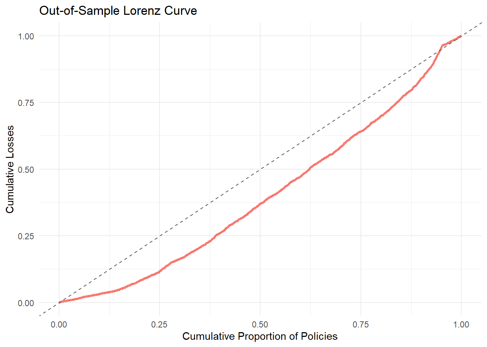
From the lorenz curve: we see that the model successfully separates low severity from high severity risks (the lowest 25% of predicted risks only yield 12% of actual loses).
Conclusion and Future Scope
Conclusion
The Log-Normal GLM performed well in estimating the claim severity and the 2-step severity modelling approach performed better than a model that always predicts the mean of the training data, with lower RMSE and MAE in both the cross-validation and final fitting.
The DHARMa package comfirmed that the Log-Normal distribution is the appropriate distribution for modelling the claim severity provided that the 882 hurdle is dealt with.
Further consideration to increase the reliability of the results:
increasing the size of the data, the final fit had better fit probably because the training data was larger than during cross-validation.
Other considerations is that the data had too many claims data missing, most of the claims data had to be treated as anonymized instead of using their actual categories as this information was not available.
But regardless of the missing information, all models performed well, and each one of them can be used to estimate pure premiums.
Future Scope
From a pure premium, the premium to charge a policyholder can be calculated by adding loadings like expense loading (admin, policy setup, etc), profit loading, etc to the risk/pure premium.